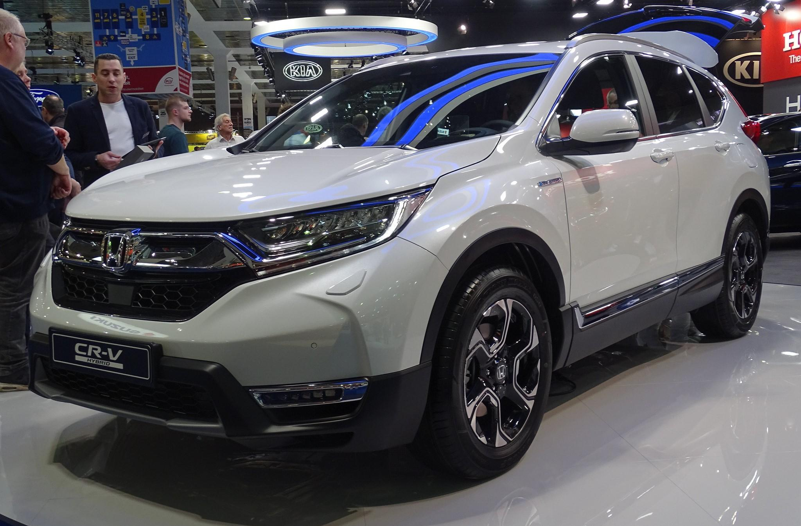
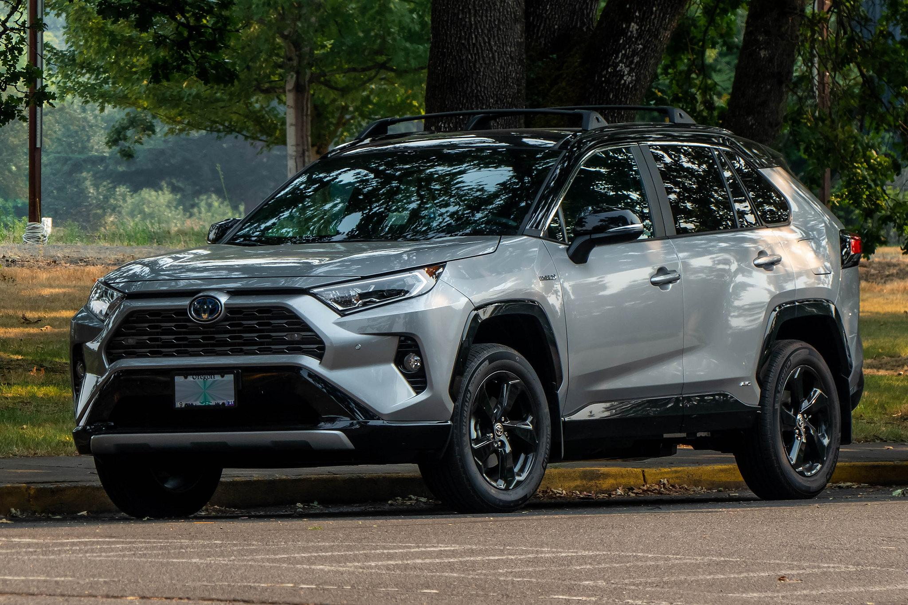
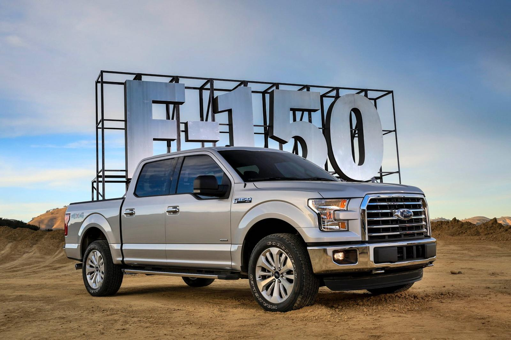

Maintaining its leadership for 4 consecutive years! What does this say? It means that the car has the optimal balance of price and quality, is convenient for everyday use, has excellent technical characteristics, and, of course, is reliable. It's no wonder that in 2022, 629 thousand units were sold. In 2021, the figure reached 985 units, which is impressive.
45600 gel
Toyota Camry
Another "leading" model from Toyota is the representative and more comfortable Camry. We haven't mentioned earlier that in 2022, the company sold 7.3 million cars worldwide – it's time to mention it now. To once again confirm the brand's popularity.
28000 dollar
Honda CR-V

Unlike the previous Toyota models, the Honda CR-V has changed quite significantly in appearance (not to mention the interior) over its 6 generations. The perfectly balanced combination of price and quality, as well as reliability and comfort, remains unchanged. The car looks great and at the same time has good off-road capabilities. The car's interior is spacious and comfortable, and in the last two generations, it's also modern.
31000 dollar
Toyota RAV4

Once again, Toyota, this time with the compact and lightweight all-wheel-drive crossover RAV4. This beauty has been in demand almost since the beginning of its existence, but its peak popularity came in recent years. In 2020, almost 915 thousand units were sold, in 2021 – 965 thousand, in 2022 – 654 thousand. Once again, the demand for electric cars played a role here, although modern RAV4 models are also available with a hybrid engine.
84200 gel
Ford F-Series

Ford pickups sell well worldwide, but in their homeland, the USA, they have simply insane demand. There's no wonder: it's a powerful SUV with a comfortable cabin that can be used as both a city car and a "workhorse." The F-150 model is especially popular. Among other full-size Ford pickups, it's a true leader. This is because it consistently ranks in the top three best-selling cars both worldwide and in the USA for several years.